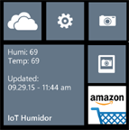

|  | Another feature I wanted was a Windows phone app to monitor the status at a glance. The phone application has a live tile that you can enable to keep you informed of your humidor health just by glancing at your home screen. The tile is updated every 30 minutes automatically once enabled. | ||||
|
The app is open source and can be found in the Windows phone store by searching for IoT humidor
Configuring the phone application is very simple, the first time you start it up it will automatically take you to the settings screen. Here you enter the user ID and server that you wish to use. You can use this with any server of your choice. The API key is only required if you want to use the actions screen to update events such as smoked, watered, or clear alert. Below are screenshots of the application:
|
|||||